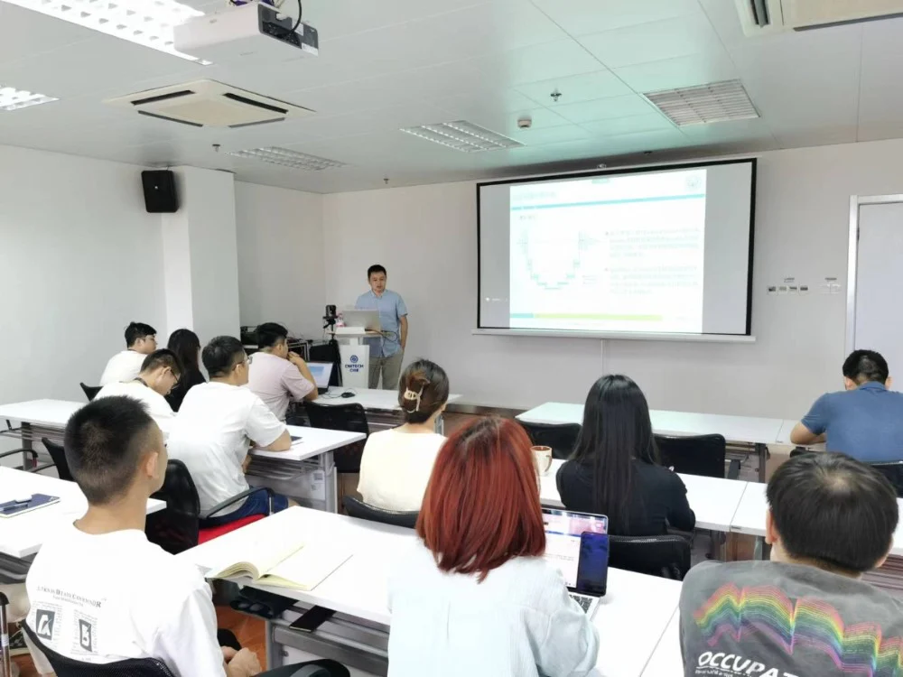
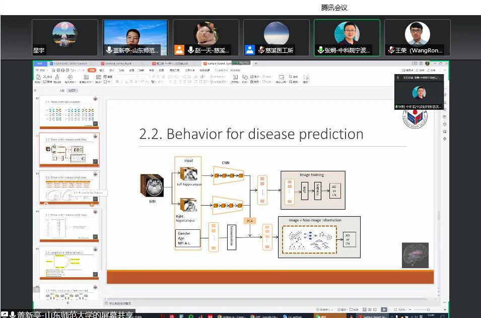
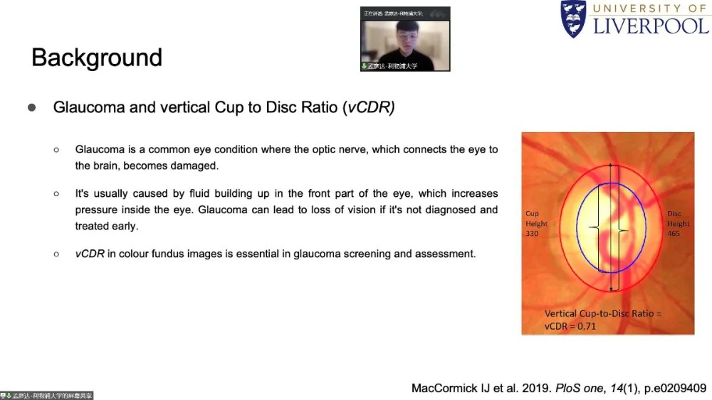

第五届一带一路学术论坛
-医工所分论坛
邀请嘉宾：
周涛 教授 南京理工大学
盖新亭 副教授 山东师范大学
孟彦达 博士 英国利物浦大学
2022年9月9日，在第五届一带一路论坛中，iMED团队邀请到周涛教授、盖新亭副教授和孟彦达博士来医工所做有关医学图像分割、基于形态学shape分析方法的精细脑结构的发育变化以及图神经网络在医学图像分割中基于边界和区域的相关性研究的学术报告，进一步提高了同学们的专业能力。
周涛教授来自南京理工大学，主要研究工作包括阿尔兹海默症的早期诊断与预测，多模态学习及应用，弱病变区域分割等等；盖新亭副教授来自山东师范大学，主要从事胎儿脑发育及阿尔兹海默症的发生与发展等方面的研究工作；孟彦达博士来自英国利物浦大学，这次是汇报图神经网络在医学图像分割中基于边界和区域的相关性研究；报告由iMED宁波的赵一天研究员主持。

在报告分享的过程中，周涛教授详细分享了医学图像分割领域存在的挑战以及几种经典的分割模型。然后，针对感染区域与正常组织之间的低对比度问题等介绍一种基于反向注意力模型的算法。在报告结束后，同学们对此展开了热烈的交流。刘汉林同学提出了分割过程中血管断开的问题，周涛教授表示血管在分割过程中的断开是难免的现象，但是可能存在标注不准确的问题。牟磊同学提出不同设备在肿瘤分割过程中存在跨设备的问题，周涛教授提出这也正是他一直想研究和解决的问题并分享了相关经验。赵一天老师提出图像分割接下来的趋势会怎样发展的问题以及混合学习是否有用，周涛教授表示比较新的transformer未必会比深度卷积网络分割效果更好，新方法与旧方法的对比可能存在“不公平”现象，真正评判分割效果的标准也不能确定。张炯老师提出肿瘤分割做到的程度以及医生对于肿瘤分割的期待两个疑问。周涛教授认为对于肿瘤的影响因素很多，不能只凭图像判断，信息采集也会有片面性。医生获得分割结果是希望获得肿瘤位置带来的信息。
盖新亭副教授和大家分享了如何基于形态学shape分析方法来研究以海马结构、小脑、等为代表的精细脑结构的发育变化情况并进一步观察海马结构亚区的皮层萎缩和tau蛋白病变累积模式。此外，盖新亭副教授还讲解了结合不同行为学状态下，tau蛋白病变的累积模式及其与认知损伤之间的相关性研究，这为基于皮层萎缩多样性和tau蛋白病变累积模式多样性的AD的多亚型研究奠定了基础。报告过后，大家对此展开了交流。马煜辉提出了左右海马结构输入的CNN是否是共享参数的问题，盖新亭副教授就此给出肯定答案并作出详细解答。

孟彦达博士针对图神经网络在医学图像分割中的应用进行了分享，介绍了一系列图神经网络在分割视杯视盘方面的工作进展。同时，就视杯视盘分割精度和青光眼诊断准确率的关系和现场参会者进行了分享和讨论。

虽然学术报告结束了，但是同学们学习的热情并未结束。会议后大家就学术报告上的问题积极地展开讨论，并联系自己的课题进行交流。在这个过程中，大家对自己的科研方向也更加明晰，对科研方向的现状与前景更加清楚了。
感谢老师们做出的精彩的学术报告以及对同学们亦师亦友般的亲切交流，也感谢这次珍贵的学习机会。
作者 李雪菲